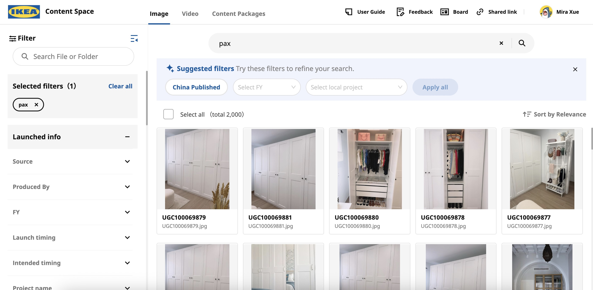

CASE A · 已上线
SEARCH & FILTERS素材搜索 · 高频筛选
搜索结果太多时，如何更快找到中国区素材？
业务同事找图时，经常希望优先查看中国区已发布的素材。搜索结果过多时，用户需要在左侧大量筛选项中找到对应条件，再选择并应用。
Before优化前 · 查找筛选条件
在左侧筛选项中逐层查找并选择条件，再应用到搜索结果。

After
从四步到两步，更快找到所需素材。
- 当搜索结果较多时，在结果区域提供快捷筛选建议
- 把 China Published、FY 和 Project Name 放在容易发现的位置
- 用户按需要选择并应用条件，逐步缩小素材范围

 ExportSave as new versionUpdate
ExportSave as new versionUpdate
关联内容删除后，仍可查看评论。
自动演示评论关联的内容被删除后，如何从列表找回讨论。
Add a comment
好的
查看关联到画布内容的评论。